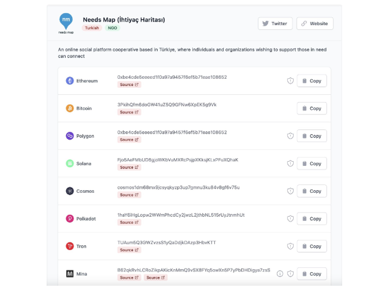

This project was created to support the victims of the Maraş earthquake.Our main goal was to facilitate donations via cryptocurrency wallets by redirecting donors to official channels. We compiled and listed all the verified wallet addresses of social aid organizations to ensure transparency and trust.
Through this initiative, we successfully directed numerous donations to help earthquake victims and prevented a significant number of fraudulent activities. My contribution focused on the website's frontend. I regularly updated the earthquake loss page, added wallet addresses, and included additional information for organizations such as the Red Crescent and Need Map.